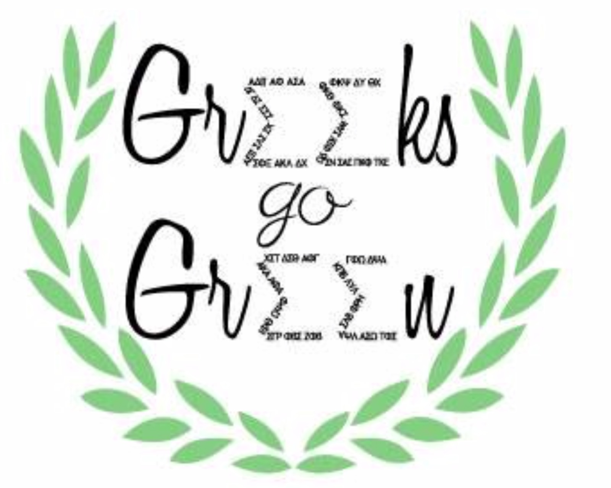

Green Paws is an environmental advocacy group at Northern Illinois University. We are an SA recognized organization, raising awareness about pressing grassroots issues on campus and in the community, and implementing projects to initiate change.
Home Depot Currently working how to make the in house warehouse work process with better information technology but implementation of a suggested new process design Data Flow diagrams and Entity Relationship Diagrams